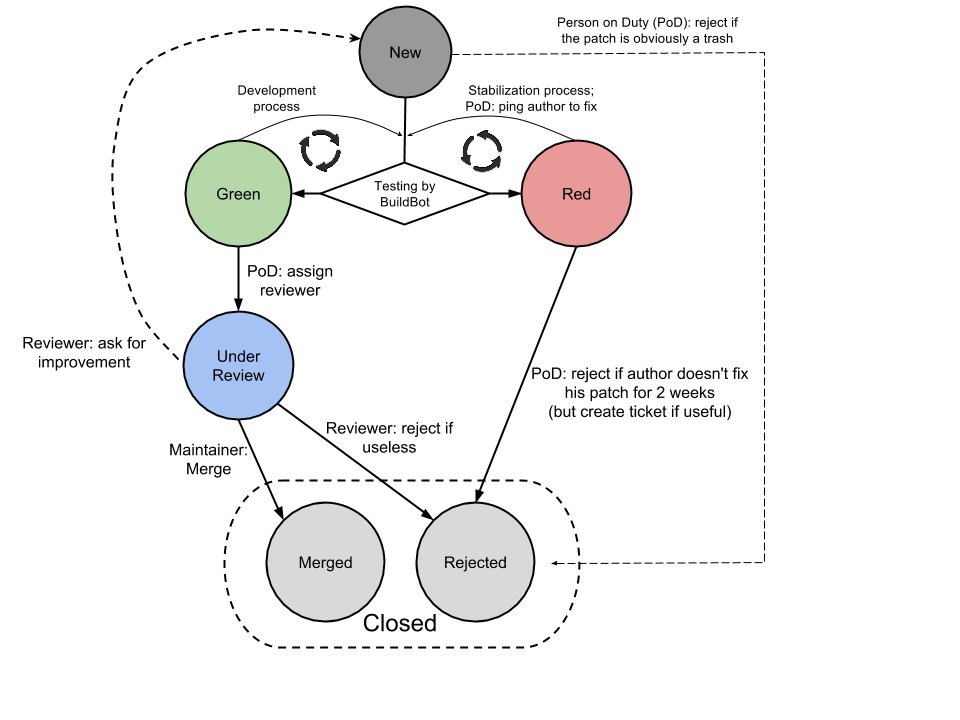

Git merupakan sistem Source Code Management (SCM) dan Version Control yang bersifat bebas dan terbuka (free and open source). Git didesain untuk fleksibilitas manajemen kode dalam skala kecil hingga skala besar, sambil tetap menjaga kecepatan proses yang dibutuhkan.
Setiap ‘repository’ pada sistem Git merupakan penyimpanan kode mandiri yang memiliki kemampuan pelacakan dan history, disamping dukungan penuh untuk mewadahi kontributor dalam jumlah yang banyak.
Github merupakan layanan repository Git dengan berbagai fungsionalitasnya ditambah dengan fungsi-fungsi lain yang memperkaya manajemen kode pada Github. Karena kelengkapan fungsi dan sifatnya yang gratis inilah maka Github seringkali dipercaya untuk menyimpan kode dari berbagai perangkat lunak Open Source, dimana Github memungkinkan semua orang untuk turut berkontribusi pada suatu project.
Salah satu fungsi Github yang sangat menguntungkan dalam pembuatan halaman
web adalah: Github dapat digunakan sebagai sebuah hosting gratis, dengan
sebuah alamat domain yang juga gratis (namapengguna.github.io).
Pada bagian ini anda akan mulai menggunakan Github untuk menyimpan kode project anda.

namapengguna.github.io. Apabila nama pengguna anda adalah ‘ppids-ugm’ maka nama repository yang akan anda buat ini bernama ppids-ugm.github.io.Beri tanda centang pada Initialize this repository with README.
+ di samping nama repository anda), kemudian copykan kode berikut:1 2 3 4 5 6 7 8 9 10 11 12 13 14 15 16 17 18 19 20 21 22 23 24 25 26 27 28 29 | <!DOCTYPE html>
<html>
<head>
<script>
function startTime() {
var today=new Date();
var h=today.getHours();
var m=today.getMinutes();
var s=today.getSeconds();
m = checkTime(m);
s = checkTime(s);
document.getElementById('txt').innerHTML = h+":"+m+":"+s;
var t = setTimeout(function(){startTime()},500);
}
function checkTime(i) {
if (i<10) {i = "0" + i}; // add zero in front of numbers < 10
return i;
}
</script>
</head>
<body onload="startTime()">
<div id="txt"></div>
</body>
</html>
<!-- credit goes to w3school.com-->
|
Simpan file baru tersebut dengan nama index.html dan lakukan commit pertama anda.
Sampai di sini, anda telah membuat sebuah repository dan mengisikan sebuah file HTML pada repository tersebut. Latihan selanjutnya adalah bagaimana memodifikasi isi dari repository ini untuk menampung kode yang akan kita gunakan pada halaman web kita.
Note
Tunggu beberapa menit (atau beberapa belas menit) dan Github akan menyajikan halaman web anda pada alamat http://<nama-username-anda>.github.io.
Panduan untuk instalasi Github pada Windows dapat anda temukan di sini
Setelah melakukan instalasi, anda juga perlu mengatur SSH Key pada Git Bash dan pada Akun Github anda. Silahkan ikuti panduan di alamat ini.
Untuk memeriksa instalasi, buka Git Bash dan ketikkan git --version
pada jendela command yang muncul.
Pada halaman web repository anda, cari menu bertuliskan SSH Clone URL pada bagian kanan. Copykan teks pada kotak yang disediakan. Teks tersebut terlihat seperti ini:
``git@github.com:ppids-ugm/ppids-ugm.github.io.git``
Buka Git Bash anda, kemudian ketikkan perintah:
**git clone** git@github.com:ppids-ugm/ppids-ugm.github.io.git
(sesuaikan dengan teks yang telah anda copy dari repository anda masing-masing. Ganti ppids-ugm di atas dengan username-anda)
Cari folder username-anda.github,io pada Windows Explorer. Folder ini merupakan repository lokal, salinan dari repository yang ada pada web Github.
Buatlah satu file baru pada folder tersebut. Simpan dengan nama latihan-git.txt dan isi dengan teks:
File ini ditambahkan dari repositori lokal
Warning
Rangkaian perintah berikut sangat penting untuk anda ingat
git pull. Perintah ini berfungsi untuk mensinkronkan repository pada github dengan repository lokal anda. Apabila didapati ada perubahan pada repository Github, perubahan tersebut akan diterapkan pada repository lokal.git add --all. Perintah ini digunakan apabila anda menambahkan file baru pada repository lokal anda dan ingin agar file ini juga tersimpan pada repository Githubgit commit -am "commit pertama". Perintah ini digunakan untuk menyimpan perubahan yang anda lakukan pada repository lokal. Perubahan ini akan disimpan pada stage, dan belum berpengaruh pada repository anda di Github.git push. Perintah ini digunakan untuk ‘mendorong’ perubahan yang telah anda lakukan di repository lokal ke repository pada GithubBuka halaman web repository anda pada Github dan pastikan bahwa file yang anda buat (latihan-git.txt) telah ditambahkan.
Fork pada bagian kanan atas halaman
github.danylaksono/latihan-webgis.Lakukan Cloning dari repository anda ini sebagaimana pada langkah sebelumnya:
**git clone** git@github.com:ppids-ugm/latihan-webgis.git
Anda akan memperoleh salinan lokal dari repository anda, yang juga merupakan salinan dari repository danylaksono/latihan-webgis. Sampai di sini anda telah melakukan langkah awal dari penggunaan Github untuk project yang melibatkan beberapa orang sekaligus. Langkah selanjutnya dapat anda pelajari pada rujukan di bawah halaman ini.
Pembahasan mengenai Github tidak selesai sampai di sini. Rujukan di bagian bawah halaman ini dapat anda gunakan untuk mempelajari fungsi-fungsi lain dari Github, terutama apabila anda bekerja dalam sebuah project.
